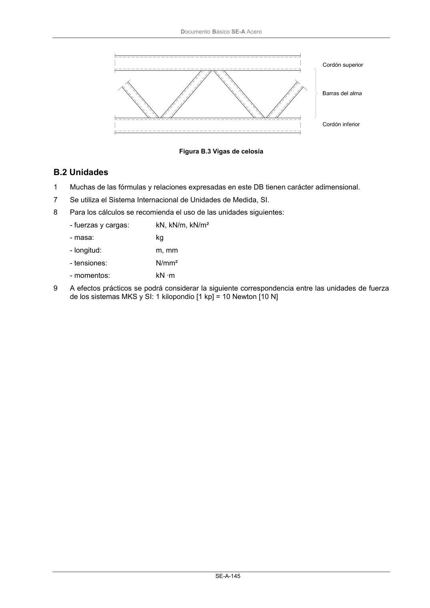

DB-SE-A Acero · edición 2007-10-23 · capa oficial
Documento DB-SE-A-oficial · SHA-256 del PDF 9ed9ea694aabfbda3bfbbef40dfe9223fde05d13c35bc2ba9751e5a96a22a64f
Copia fiel del PDF fuente · Fuente oficial
Ficha de la disposición en la fuente oficial
Formatos: JSON del segmento · Markdown
B.2 Unidades 1 Muchas de las fórmulas y relaciones expresadas en este DB tienen carácter adimensional. 7 Se utiliza el Sistema Internacional de Unidades de Medida, SI. 8 Para los cálculos se recomienda el uso de las unidades siguientes: - fuerzas y cargas: kN, kN/m, kN/m² - masa: kg - longitud: m, mm - tensiones: N/mm² - momentos: kN ·m 9 A efectos prácticos se podrá considerar la siguiente correspondencia entre las unidades de fuerza de los sistemas MKS y SI: 1 kilopondio [1 kp] = 10 Newton [10 N] DocumentoBásico SE-A Acero SE-A-147
